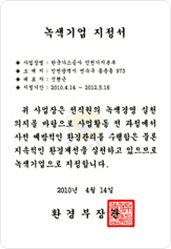

환경경영 성과
KOGAS의 환경친화성
녹색기업 지정
KOGAS의 환경정책은 규제 준수라는 기존의 수동적인 움직임에서 벗어나 기업 스스로가 자발적으로 환경성을 평가하고 개선 계획을 실행토록 했으며 평택생산기지, 인천생산기지 2개 사업장을 녹색기업으로 지정받아 운영함으로서 사업장의 자율적인 환경관리체제 구축을 유도하고자 노력하고 있습니다.
- 인천생산기지 : 2003. 12. 31 지정, 2010. 9. 13 재인증
- 평택생산기지 : 2002. 5. 1. 지정, 2010. 4. 12 재인증
지정서
- 평택 기지본부
-  인천 생산기지